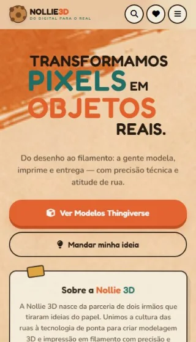
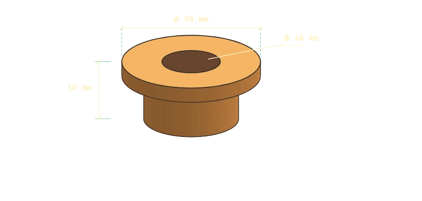
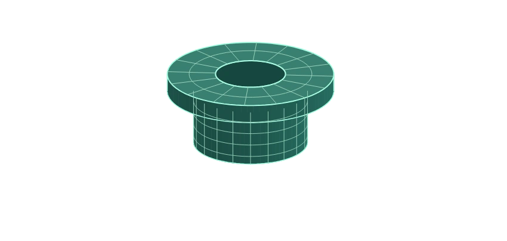
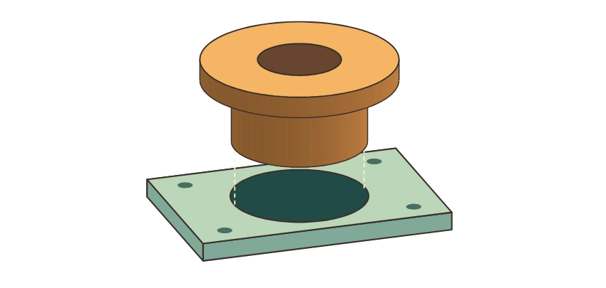
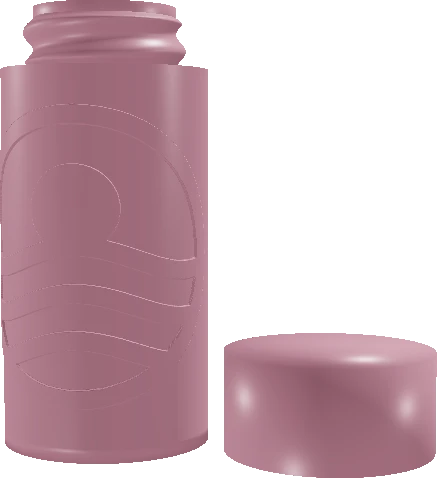
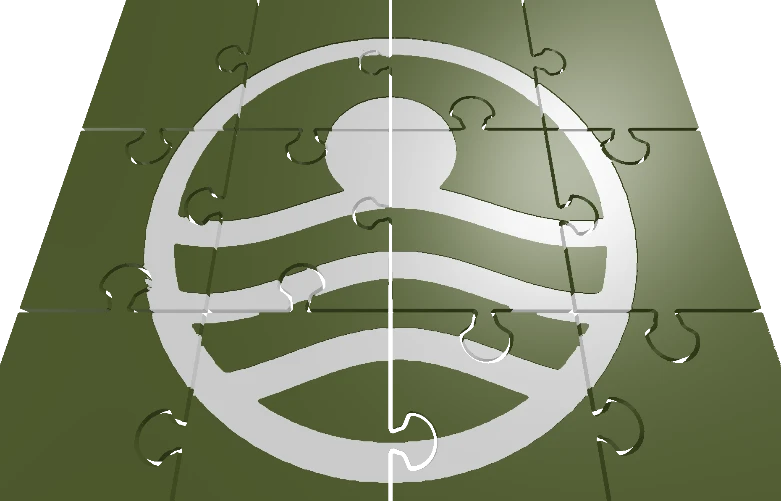

Desenvolvimento de sites
Desenhamos a página para o celular e o computador. No nosso site, o visitante escolhe um produto, personaliza e vê o orçamento na hora.
Explorar o site da NollieEstúdio Nollie 3D
Criamos sites, reconstruímos peças a partir de uma amostra e desenvolvemos ferramentas para você desenhar o seu próprio presente.
Serviços do estúdio

Desenhamos a página para o celular e o computador. No nosso site, o visitante escolhe um produto, personaliza e vê o orçamento na hora.
Explorar o site da Nollie


Tem uma peça para repor ou adaptar? Neste estudo de uma bucha, você vê como passamos das medidas ao teste de encaixe.
Conversar sobre uma peçaPersonalizadores da Nollie
Escolha um modelo para testar sua própria imagem e ver a prévia.
Seu desenho ganha contorno e relevo. Escolha as cores e a posição da argola.
Criar chaveiro
Ajuste o tamanho ao seu batom e aplique seu desenho ao redor do estojo.
Criar porta-batom
Envie a arte e escolha quantas peças vão compor o desenho.
Criar quebra-cabeçaA foto vira relevo. A luz do próprio pisca-pisca revela a imagem na árvore.
Criar bolinha
O chaveiro da rosa abre um provérbio e uma pergunta para o casal. O seu chaveiro abriu este portfólio.
Conhecer o NFC
O mascote, as manchas de tinta e a paleta da Nollie aparecem no site e nas nossas criações. Também desenvolvemos essa linguagem para outras marcas.
Seu contato no estúdio
Estudante de Engenharia Mecânica em Santos e modelador em Blender desde 2021. Na Nollie, acompanho o projeto do primeiro desenho ao acabamento.
Perfil profissional
Criei a marca, sua identidade visual e o site institucional. Além de modelar peças e desenvolver protótipos, atendo clientes, preparo orçamentos e acompanho a fabricação e o acabamento.
Modelagem para impressão e animações, renderização e preparação de arquivos para fabricação. Cada projeto começa com a referência e o uso que o cliente tem em mente.
Como assistente de informática, trabalhei com suporte a computadores, organização de redes, redes sociais institucionais e demandas administrativas do gabinete.
Como auxiliar técnico, executei serviços de polimento, higienização e vitrificação. Também organizei estoque, agendamentos, atendimento e pagamentos.
Produção, venda e controle de pedidos. Criei a identidade da marca e um personagem em 3D para sua comunicação nas redes sociais.